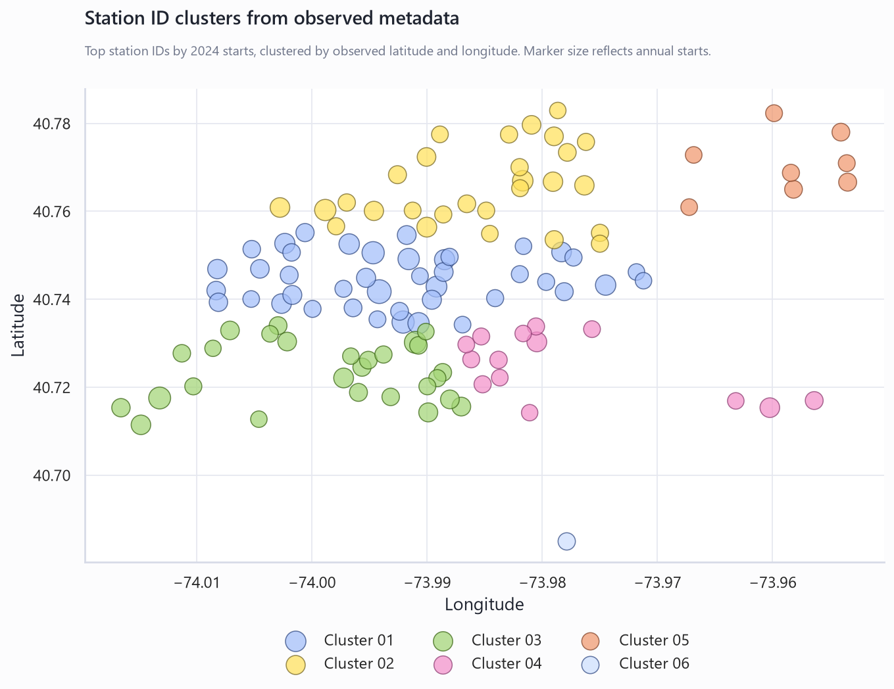
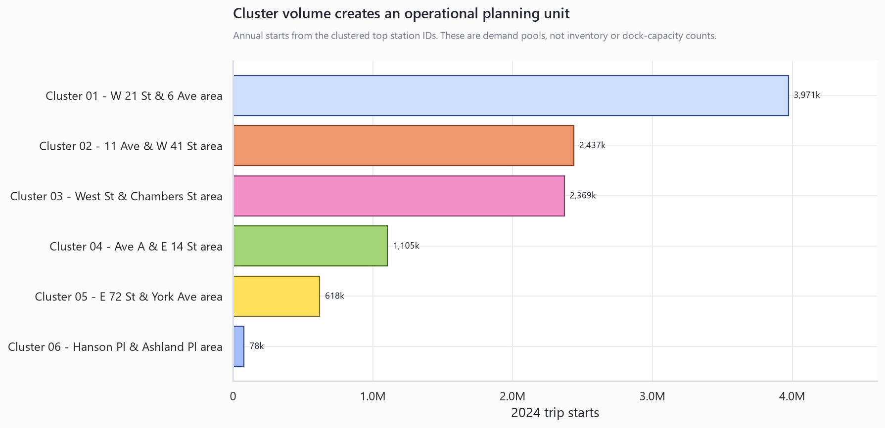
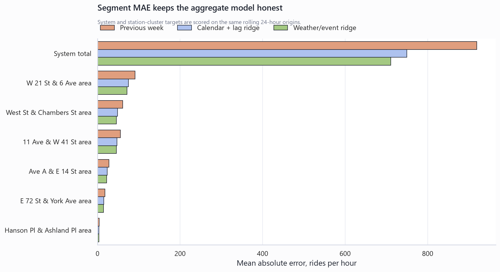

Citi Bike Station-Cluster Forecasting
Executive Summary
- The upgrade changes the target from a citywide hourly total to operational demand pools. It models the system total plus 6 station clusters built from stable station IDs, observed station names, and observed coordinates.
- The richer model is evaluated, not assumed better. The weather/event ridge beat previous-week MAE in 6 of 6 station clusters and beat the simpler calendar-lag ridge in 6 of 6 clusters.
- The decision fit is rebalancing and capacity planning. The highest-priority planning cluster in this run is Cluster 01 - W 21 St & 6 Ave area because it combines scale, forecast error, and operating relevance.
- Recommended use: Use weather/event cluster forecasts as a rebalancing planning layer, with the calendar-lag ridge retained as the control benchmark.
Station clusters make the forecast operational
The prior proof showed that aggregate hourly demand can be forecast from calendar and lag structure. This layer asks the more useful operating question: where should a rebalancing or capacity-planning review look first? Clusters are built from station IDs and observed coordinates, then scored as their own hourly targets.
| Cluster | Stations | Annual Starts | System Share | Highest-Volume Station |
|---|---|---|---|---|
| Cluster 01 - W 21 St & 6 Ave area | 42 | 3,971,209 | 9.0% | W 21 St & 6 Ave |
| Cluster 02 - 11 Ave & W 41 St area | 28 | 2,436,861 | 5.5% | 11 Ave & W 41 St |
| Cluster 03 - West St & Chambers St area | 27 | 2,368,925 | 5.4% | West St & Chambers St |
| Cluster 04 - Ave A & E 14 St area | 14 | 1,105,087 | 2.5% | Ave A & E 14 St |
| Cluster 05 - E 72 St & York Ave area | 8 | 618,213 | 1.4% | E 72 St & York Ave |
| Cluster 06 - Hanson Pl & Ashland Pl area | 1 | 78,467 | 0.2% | Hanson Pl & Ashland Pl |
Weather and event features must earn their place
The richer model receives the same calendar and prior-demand features as the baseline ridge model, plus hourly weather, federal holiday windows, and selected major NYC event windows. The table below shows whether that extra context reduces out-of-sample MAE in rolling 24-hour validation.
| Segment | Previous Week MAE | Calendar-Lag MAE | Weather/Event MAE | Lift vs Previous Week | Lift vs Calendar-Lag | Best Model |
|---|---|---|---|---|---|---|
| Cluster 01 - W 21 St & 6 Ave area | 91 | 75 | 72 | +21.1% | +4.1% | Weather/event ridge |
| Cluster 02 - 11 Ave & W 41 St area | 56 | 47 | 46 | +17.9% | +3.8% | Weather/event ridge |
| Cluster 03 - West St & Chambers St area | 61 | 49 | 46 | +25.0% | +6.2% | Weather/event ridge |
| Cluster 04 - Ave A & E 14 St area | 28 | 24 | 22 | +19.8% | +4.7% | Weather/event ridge |
| Cluster 05 - E 72 St & York Ave area | 18 | 15 | 15 | +20.0% | +4.2% | Weather/event ridge |
| Cluster 06 - Hanson Pl & Ashland Pl area | 4 | 3 | 3 | +20.6% | +1.0% | Weather/event ridge |
| System total | 919 | 750 | 711 | +22.7% | +5.2% | Weather/event ridge |
Visual evidence





Planning recommendation
Tie this model to Rebalancing and station-capacity planning. Use cluster-level forecast misses and event/weather pressure as a watchlist for where to review bike availability, dock availability, and field-crew coverage. Do not treat trip-start demand as a direct inventory measure.
| Cluster | Annual Starts | Weather/Event MAE | Weather/Event WAPE | Lift vs Previous Week | Planning Use |
|---|---|---|---|---|---|
| Cluster 01 - W 21 St & 6 Ave area | 3,971,209 | 72 | 14.3% | +21.1% | Use as a rebalancing watchlist signal when event or weather pressure is high. |
| Cluster 02 - 11 Ave & W 41 St area | 2,436,861 | 46 | 15.0% | +17.9% | Use as a rebalancing watchlist signal when event or weather pressure is high. |
| Cluster 03 - West St & Chambers St area | 2,368,925 | 46 | 15.3% | +25.0% | Use as a rebalancing watchlist signal when event or weather pressure is high. |
| Cluster 04 - Ave A & E 14 St area | 1,105,087 | 22 | 15.6% | +19.8% | Use as a rebalancing watchlist signal when event or weather pressure is high. |
Further questions
- Would the same cluster ranking hold with dock capacity, bike availability, and rebalancing truck logs?
- Should the cluster map be rebuilt quarterly as stations open, close, or shift coordinates?
- Would weather forecasts available at the origin perform differently from the observed weather used in this historical proof?
Caveats and assumptions
- The target is trip starts, not unmet demand, empty docks, bike stockouts, or truck moves.
- Weather inputs use historical Open-Meteo reanalysis as a stand-in for weather forecasts that would be available before an operating day.
- The event calendar is a compact public-calendar feature set, not a complete New York City events database.
- Station metadata is derived from observed trip-history station IDs, names, and coordinates, not an official capacity or station-status feed.